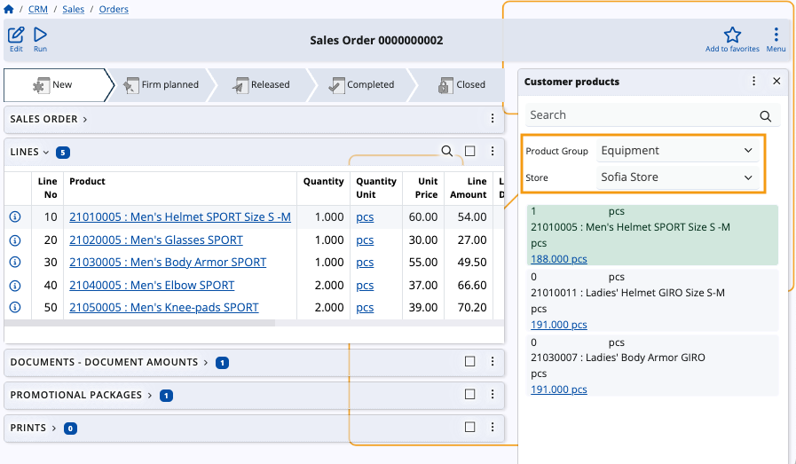

How to use the Customer products panel
The Customer products functional panel displays a list of products which are negotiated for a customer.
Using it, you can easily adjust existing product quantities or add new ones in the document lines of logistical documents that have a customer as part of their definitions.
Navigation
To reveal the panel, you need to open the form of a document which has an active Customer field (e.g. a sales order). Then, choose Customer products from the list of Functional panels found within the Menu button.
Note
The panel's buttons will be visible and usable only when you:
- create a new document
- edit an existing document

Panel features
The Customer products panel includes a search bar and an option to filter products by groups and stores.
You can enter quantities manually, adjust them with “+” and “-” buttons, as well as determine their measurement units.
Warning
Customer products are loaded for a selected store. Changing the store will also change the products being displayed.

Filter by store and product group
You can filter customer products by choosing the product group to which they belong, as well as the store they are available in.
This can narrow down the products, offering a more filtered view of the panel.

Add and remove quantities
The Customer products panel offers the ability to add or remove product quantities in the lines of the respective document.
To do so, you need to be creating or editing that document.
Then, use the “+” and “-” buttons to increase or decrease quantities as needed.
Newly added customer product quantities are automatically added as new rows in the Lines panel.

Customize panel
If needed, you can customize the Customer products panel by showing or hiding certain fields for all products listed by the panel.
This includes all fields from the Crm_Customer_Products table and the Gen_Products table.

Note
The screenshots taken for this article are from v24 of the Web Client.